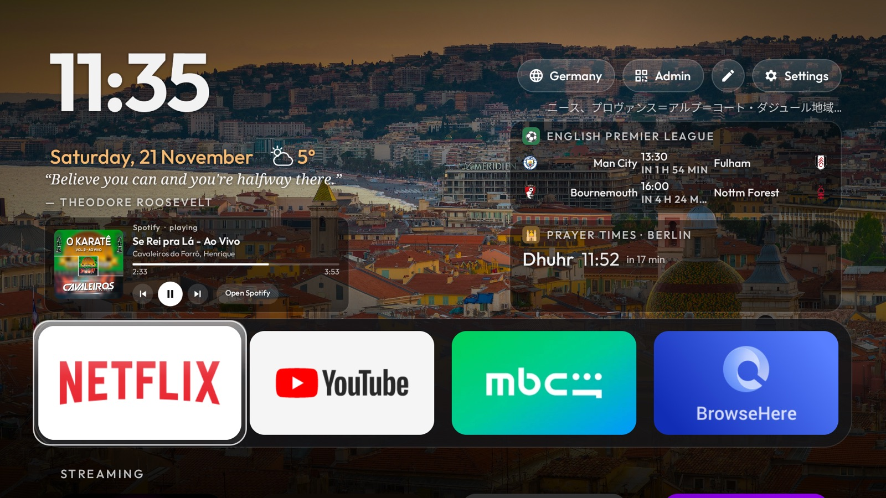
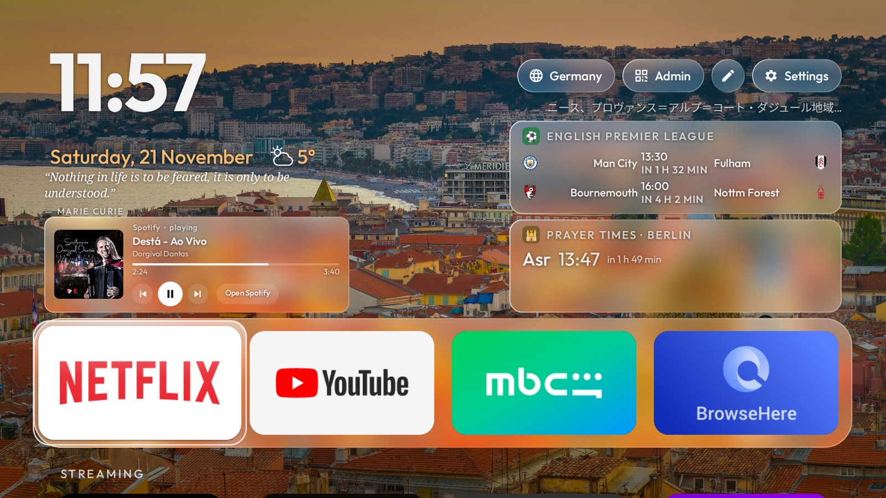
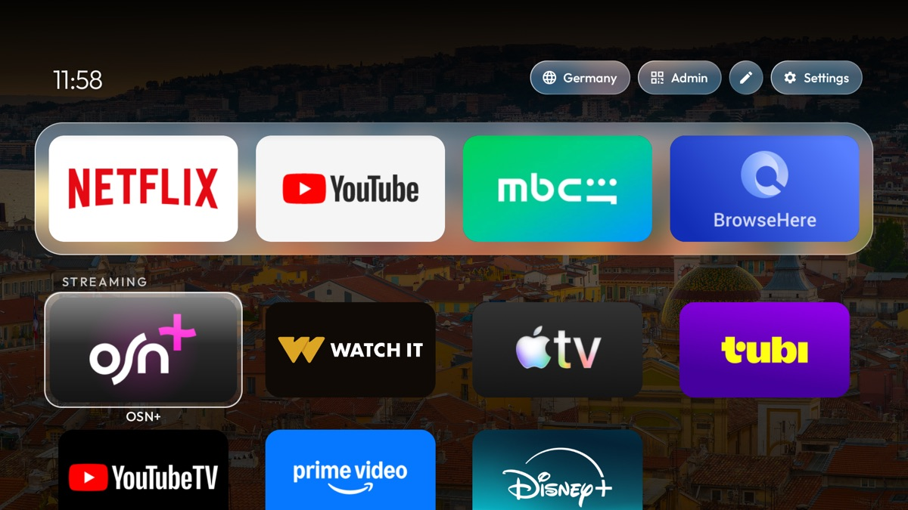
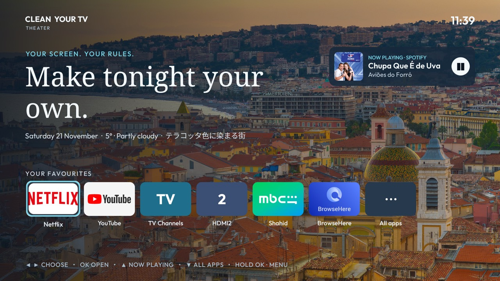
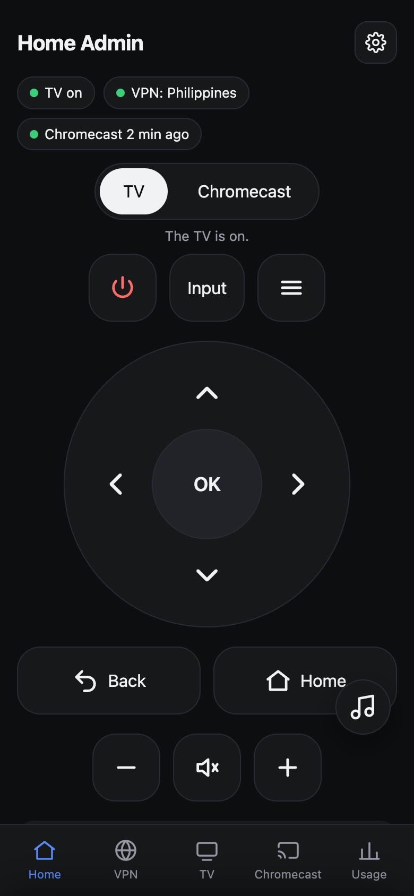
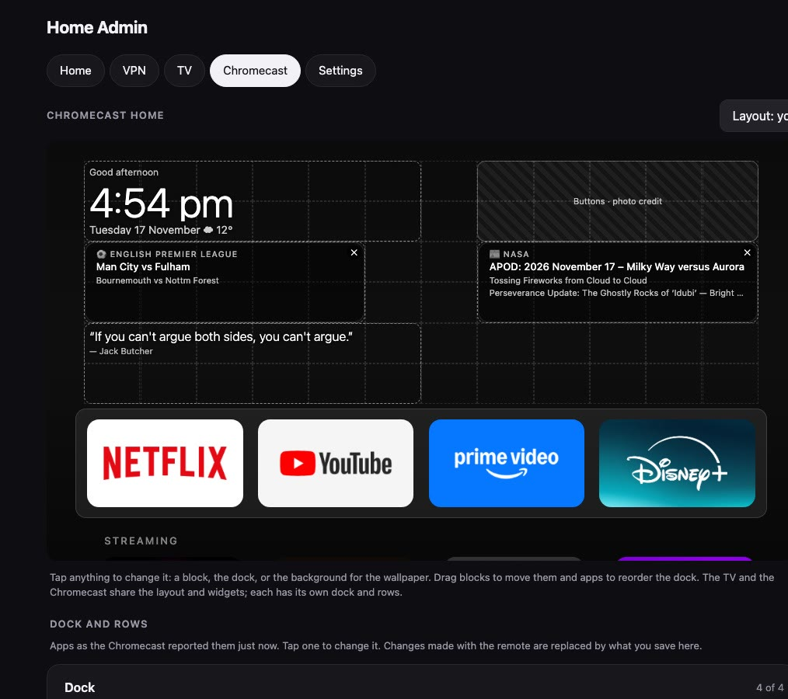
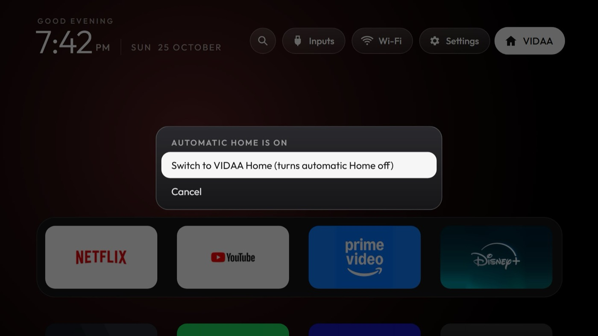

For Google TV, Chromecast and Hisense VIDAA TVs
Clean Your TV replaces the Home screen with a calm one you design: your own apps, the clock, the weather, live football scores, today's photo and what's playing. Free, open source, and nothing leaves your home.
First, what TV do you have?
Pick one and this page shows only what works on your TV.


Your TV is next
Today Clean Your TV runs on Google TV and Hisense VIDAA. These are on our list, roughly in this order:
Plug a Chromecast with Google TV or a Google TV Streamer into any TV's HDMI port. Clean Your TV runs on it, whatever brand the TV is.
The problem
Before writing any code we measured a Hisense VIDAA TV and read the code of its own Home screen. Here is what we found.
Interest-based advertising was on, with an advertising ID, until we switched it off by hand in the TV's privacy settings.
VIDAA's own Home screen talks to servers for event logging, A/B tests and recommendations, and to a third-party ad network for its free channels.
VIDAA isn't Android. There's no way to install apps, and the Home button always goes to VIDAA's Home. Tools that clean Android TVs can't help.
On Google TV, the Chromecast included, Home is mostly rows of promoted shows, sponsored picks and a screensaver that advertises, with your own apps pushed down.
Measured on a Hisense 50A5FE, VIDAA U9, firmware V0000.09.09A.P0930, October 2026. Full notes in the project's FINDINGS.md.
The answer

How it works
No accounts, no cloud server. On a VIDAA TV it uses the TV's own remote-control channel, the same one the official phone remote app uses. Nothing is hacked or flashed.
VIDAA can't run apps, so Home is a web page on a tile of its own. When the TV turns on, or Netflix closes, the helper brings it back.
A real Android TV app that becomes the Home screen. It carries its own small server, so it needs no computer at all.
One page for both screens: a remote, a trackpad, the player, and a live picture of each Home to rearrange by dragging.
Built from research
We followed the TV design guidance from Android TV, Apple's tvOS and Fire TV, then tested every screen with a real remote.
Themes
Each layout arranges the same apps in a different way: a channel dial, an evening timeline, a gallery, a quiet clock. Choose one below to see it on the TV. Every picture is from the same real Chromecast.

Swipe the TV to see the next theme
12 of 15
Photo first
Make tonight your own.
Today's photo, a headline, what is playing, and one row: your favourites, Live TV, an input and all apps.
◀ ▶ choose · OK open · ▲ now playing · ▼ all apps
On top of any layout: draw Classic in Standard or Glass, and swap the app icons for an Android icon pack such as Arcticons. Apps a pack doesn't cover keep their own icon.
Your phone
One web page controls both screens. Open it from the QR code on the TV, add it to your phone's Home screen, and it opens full-screen like an app. No app store, no account. Tap a feature to see it.

Swipe the phone to see the next feature
On a computer or tablet, the same page shows a live picture of each Home. Tap a block to resize it, drag apps into the dock, add widgets like football scores and news, pick the photo of the day. Undo anything, then save: it shows on the TV in seconds.

Is it safe?
The project's first rule is "never risk the TV". No firmware is flashed, no TV settings are written, and the TV's network traffic isn't touched.
No. It only uses what the TV already offers to its own phone remote: opening apps, sending keys, adding a tile. A factory reset removes everything.
Press the VIDAA button on the Home screen and choose "Switch to VIDAA Home". On a Chromecast, one command sets Google TV back as Home.
No account and no cloud server. Settings stay on your computer or the Chromecast. It only fetches the weather, the photo of the day and the scores you turn on.
On VIDAA the remote's Home button still opens VIDAA's Home first; your Home comes back when the TV turns on or an app closes. A VIDAA TV needs a computer that stays on. It doesn't block ads inside apps like YouTube.
Google TV and Android TV with Android 9 or newer: the Chromecast with Google TV (4K and HD), the Google TV Streamer and other Google TV boxes. We tested it on a Chromecast with Google TV 4K; other boxes should work the same way. On TVs: Hisense VIDAA U9 models, with the helper.
Nothing. It's open source under the MIT licence.

Pick your setup
The app, and a computer once to install it (about 10 minutes). After that it runs on its own. For a Chromecast with Google TV and other Google TV or Android TV boxes with Android 9 or newer.
Google TV guide →The app, plus the helper on a computer that stays on. One phone page for both screens.
Both screens guide →The helper on a computer that stays on: a Mac, a Windows PC or a Raspberry Pi.
VIDAA guide →Download
SHA-256 a233cbd137ae22bfd779a9190186c749dc29893e902f5dcf9e1b8dd7b66d389b
Works on Chromecast with Google TV and other Google TV or Android TV boxes (Android 9+). Glass and the newest speed-ups come in the next release.
Step by step in the helper guide.
Google TV · Android 14VIDAA U9 · V0000.09.60IVIDAA U9 · V0000.09.09A